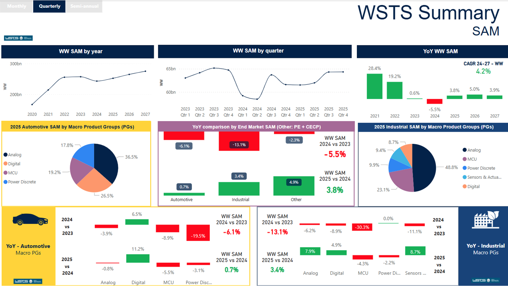
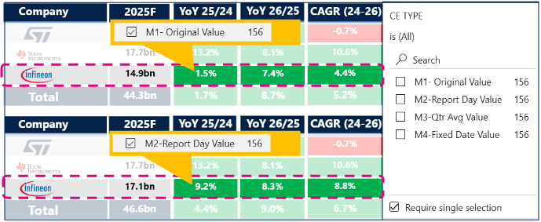
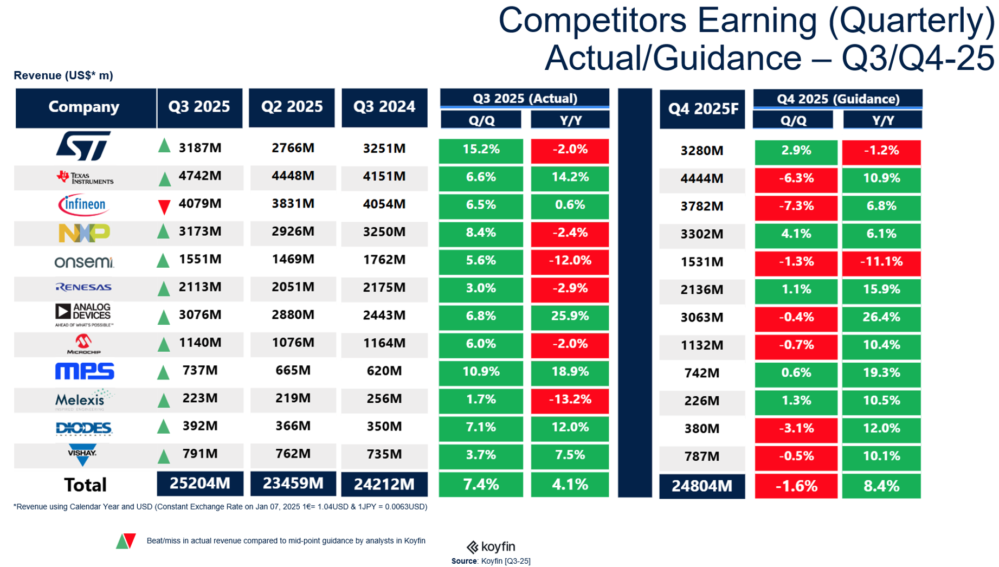
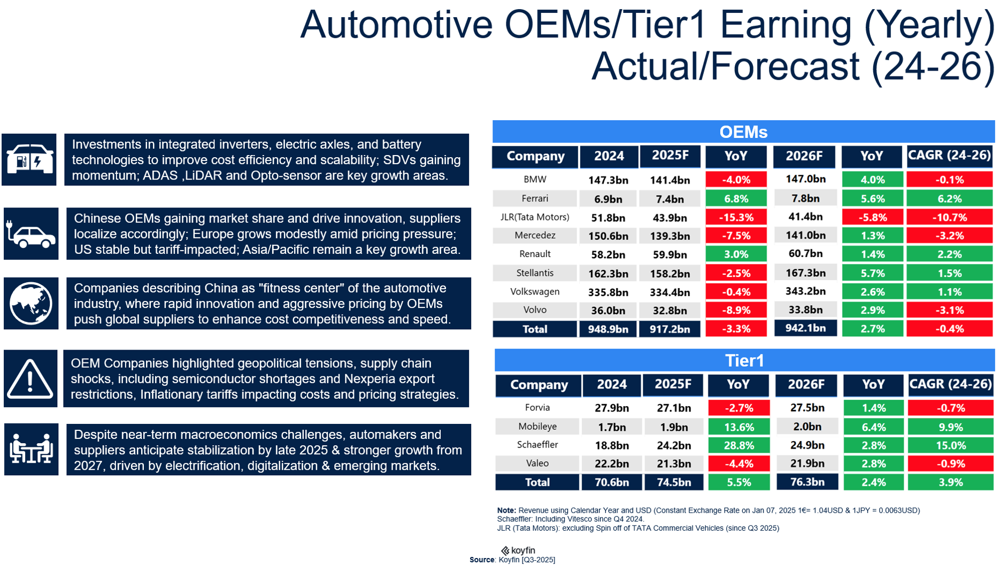
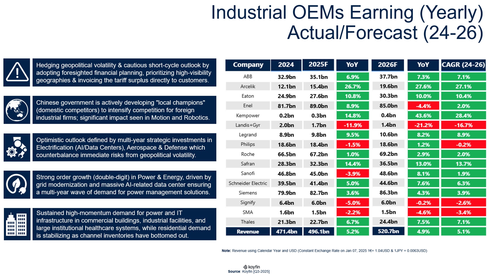
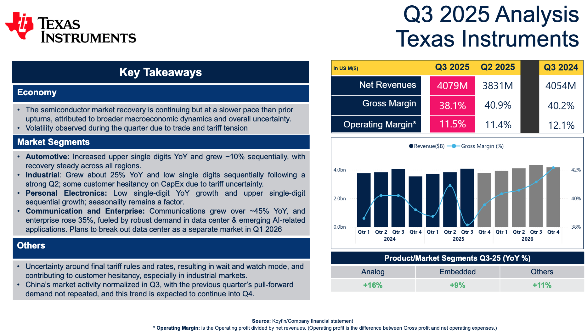
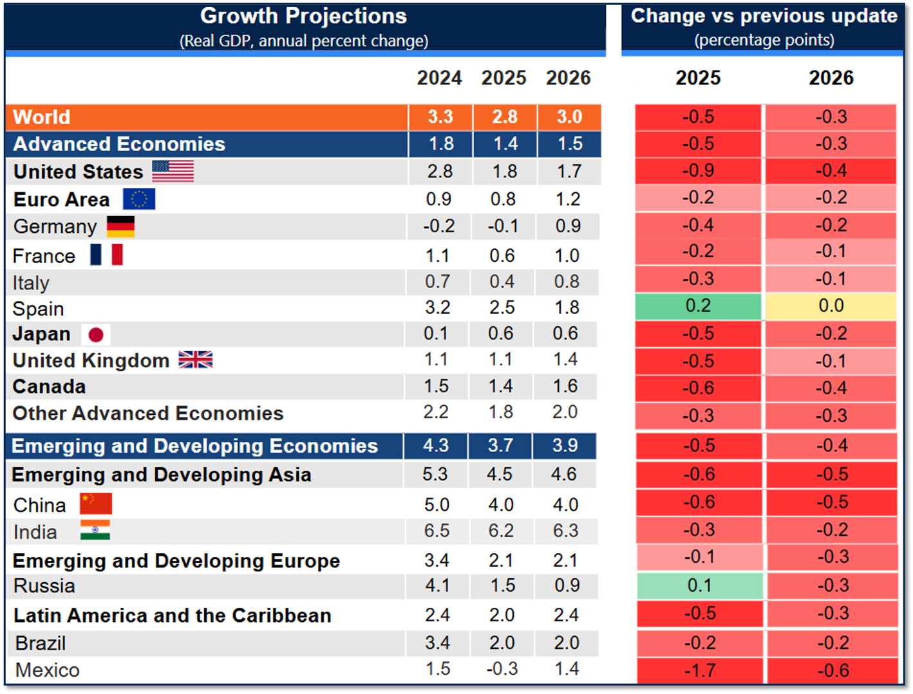

The strategic problem
The EMEA Automotive and Industrial segment had no clear visibility into competitors' and customers' financial intelligence, macro trends, or earnings sentiment. This forced strategic decisions to be made without real data behind them. Specifically, there was no visibility on actual results versus consensus, no system to capture executive sentiment from earnings calls, and no clear understanding of how macroeconomic indices correlate with the semiconductor industry.
Situation, task, action, result
Situation. C-Suite leaders were navigating blind, with no consolidated view of competitor or key customer growth, and decisions made on incomplete data.
Task. Build an AI enabled, end to end competitive and customer intelligence system, covering 12 peers and key customers with the help of AI agents and automation tools.
Action. Pulled financials from Koyfin for 12 competitors and 50 plus key customers, built a 4 mode currency engine, used Power Query to load everything into one unified Power BI dashboard, and analyzed earnings transcripts and macro indicators.
Result. Surfaced a performance gap, ST at plus 0.2 percent versus the industry at plus 10.4 percent. Identified a key investment move from a silicon carbide rival. Directly informed C-Suite resource allocation.
The 4 mode currency engine
Applied to both competitor and customer financial data. Without normalizing for currency, cross company comparisons are close to meaningless.
- M1, Original Value. Ground truth, exactly as reported in the original currency.
- M2, Report Day Rate. Market perception, converted at the exchange rate on the day earnings were released.
- M3, Quarterly Average. Trend analysis, converted at the quarterly average exchange rate.
- M4, Fixed Reference Date. Apples to apples comparison, converted at any date you choose.
One competitor, Renesas, showed a 211 million dollar difference between two modes in a single quarter. That gap is pure currency distortion, not a real change in business performance.
Intelligence deliverables
360 degree coverage across competitors and key automotive and industrial customers.
- Quarterly Intelligence Newsletter. Market intelligence on the semiconductor industry, its total and served addressable market, product groups, plus financial intelligence, margins, executive and business sentiment, and macro signals for the closest competitors and 50 plus customers.
- Monthly Performance Reports. Market intelligence on the industry and the macroeconomic outlook every month, covering indicators such as the PMI and the ZEW index.
- Ad hoc Strategic Reports. Detailed analysis of a specific end market or product group whenever a trend needs a closer look.
The AI agent does more than just refresh numbers. It tailors each report to its audience, a C-Suite newsletter stays high level and narrative, while a working team report goes deep on the underlying figures, and it regenerates every version automatically the moment a new competitor or customer releases earnings, so the intelligence is never more than a few hours stale.
The automation workflow
An end to end, n8n orchestrated, AI automated data pipeline. It pulls competitor and customer financials from Koyfin, uses an AI agent to review and validate the files, uploads them to SharePoint, and refreshes the Power BI dashboard automatically, without a single manual step.
Manual effort per earnings cycle dropped from 2 to 3 days down to under 4 hours. The work shifted from manual data handling to supervising and refining what the AI produces.
What this project proves
- Zero incremental cost. Built on the existing Microsoft enterprise stack, plus a local n8n instance.
- C-Suite impact. Resource allocation decisions directly informed, on both an ad hoc and a quarterly review basis.
- 62 plus entities tracked. 12 competitors and 50 plus key customers, in one platform.
- 1.5 billion dollars. Forex distortion exposed in a single quarter, inside the closest competitor cluster.
Tools and way of working
Competencies applied
Automation workflow gallery

The n8n workflow behind the platform, from scheduled trigger to AI agent review to an automatic Power BI dataflow refresh.

The WSTS market benchmark used to sanity check competitor and industry trends inside the platform.

The 4 mode currency engine in action. Switching between Original Value and Report Day Rate instantly changes a competitor's growth rate, proof that the normalization is doing real work, not just a checkbox.

Quarterly actual versus guidance for all 12 tracked competitors side by side, refreshed automatically as each one reports.

Automotive OEM and Tier 1 earnings, actual and forecast, so the automotive customer view stays as current as the competitor view.

The same benchmark, run for the industrial customer base, so both divisions get an equally current view.

An ad hoc deep dive on a single competitor, Texas Instruments here, generated on demand whenever leadership needs more than the standard newsletter gives them.

The macroeconomic overlay, GDP growth by region, layered in alongside PMI and other indices so competitor performance is always read in context, not in isolation.